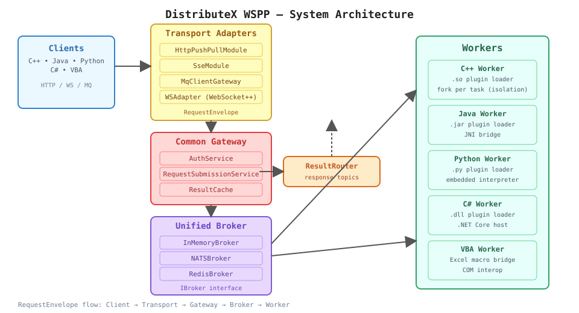
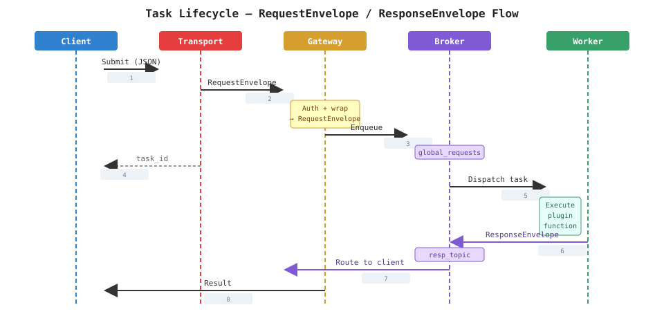

DistributeX: Scaling Legacy Quant Engines
Quantitative finance libraries like QuantLib were designed for single-threaded desktop use. Running them in modern cloud environments — where concurrent pricing requests arrive from many clients — exposes their thread-safety assumptions. The typical response is a full rewrite, which is expensive, risky, and diverts resources from revenue-generating work.
DistributeX takes a different approach. Rather than rewriting the libraries, it wraps them in process-level isolation with a lightweight orchestration layer. Unmodified legacy code runs safely in sandboxed child processes, scaled horizontally by adding more workers. The system supports polyglot workers across C++, Java, Python, C#, and VBA, all coordinated through a unified message broker.
Architecture

The system is designed as a Message Broker Driven architecture where transport protocols are decoupled from core computation via a unified envelope system:
- Transport Adapters — HTTP, WebSocket, SSE, and MQ. Each adapter translates client requests into a standard
RequestEnvelopeand delivers responses via topic-based routing. The WebSocket++ server delegates to protocol-specific modules:HttpPushPullModulefor REST,SseModulefor streaming, andMqClientGatewayfor direct broker access. - Common Gateway Layer —
AuthServicehandles JWT-based authentication and authorization, whileRequestSubmissionServicegenerates uniquerequest_id, wraps payloads intoRequestEnvelopes, and enqueues them into the broker. - Unified Broker Layer — The
IBrokerinterface supports both pub/sub and durable queuing.InMemoryBroker(default) features visibility timeouts and retry logic. Swap inNATSBrokerorRedisBrokerfor distributed deployments without changing application code. - Workers — Consume tasks from the broker, load language-specific plugins (
.so,.jar,.py,.dll), and publishResponseEnvelopes to response topics. C++ workers fork a child process per task for memory isolation; other languages use process-per-worker.

The task lifecycle follows a consistent flow: a client submits a request through any transport adapter; the gateway authorizes and wraps it into a RequestEnvelope (containing request_id, user_id, resp_topic, and payload); the broker enqueues it; a worker consumes, executes, and publishes a ResponseEnvelope to the response topic; the ResultRouter dispatches the result back to the correct transport connection.
Plugin Contracts
Each worker plugin exposes a method map of JSON-in/JSON-out functions using language-native conventions:
| Language | Plugin Contract |
|---|---|
| C++ | extern "C" std::map<std::string, json(*)(const json&)> get_methods() |
| Python | def get_methods() -> dict[str, Callable] |
| Java | public static Map<String, Function<JsonNode, JsonNode>> getMethods() |
| C# | public static Dictionary<string, Func<JsonNode, JsonNode>> GetMethods() |
| VBA | Public Function GetMethods() As Dictionary |
Wrapping a legacy library requires ~30 lines of JSON marshalling. No changes to the original library are needed.
Message Contracts
The system uses standardized JSON envelopes for multi-language compatibility:
- RequestEnvelope (
request_envelope.h) — containsrequest_id,user_id,resp_topic, and the taskpayload. - ResponseEnvelope (
response_envelope.h) — containsrequest_id,status, and the computationresult.
Server Internals
The C++ server at cpp/server/server_main.cpp initializes core services in a modular fashion:
auto msgBroker = make_broker(serverCfg.broker);
AuthService authService(®istry);
RequestSubmissionService submissionService(msgBroker.get());
ResultCache resultCache;
HttpPushPullModule httpModule(&authService, &submissionService, &resultCache);
SseModule sseModule(&authService, &submissionService, &sseRegistry);
ResultRouter resultRouter(msgBroker.get(), ...);
resultRouter.start();
auto server = setup_ws_server(..., &httpModule, &sseModule);
Pluggable Broker Layer
The IBroker interface is the backbone of the system. Implementations include:
- InMemoryBroker — default for single-node deployments. Features visibility timeouts, nack/requeue, and async dispatch to local subscribers.
- NATSBroker — NATS-backed for multi-cloud, durable, high-throughput routing.
- RedisBroker — Redis pub/sub for lightweight distributed setups.
All are interchangeable via configuration — no code changes required.
Authentication & Security
Security follows a three-tier hierarchy:
- Transport Security — TLS for HTTP/WS/NATS connections.
- Identity Security — JWT-based authentication (
AuthService) for every request, with RSA-256 signed tokens. - Topic Security — Response topics are resolved server-side; clients cannot spoof their response destination.
AI Agent Integration (MCP)
DistributeX exposes a Model Context Protocol (MCP) server that gives AI agents access to the framework through standard tool calls:
Claude Desktop / Web / Custom App
↓
MCP Server (Python)
├─ submit_task — fire a single computation
├─ check_result — non-blocking status check
├─ wait_for_result — blocking wait until completion
├─ batch_submit — submit 1000s of tasks at once
└─ task_info — full task metadata
↓
DistributeX Framework
↓
Worker Pool (100s of nodes)
Getting started:
pip install -r distributex/python/mcp/requirements_mcp.txt
DISTRIBUTEX_URL=http://localhost:8080 \
python3 distributex/python/mcp/distributex_mcp_server.py
Then configure Claude Desktop to point to the MCP server and ask it to price bonds, run sensitivity analyses, or automate portfolio monitoring.
Use Cases
- Bond pricing — wrap a legacy C++ QuantLib plugin without making it thread-safe. Risk systems that need concurrent pricing of many instruments simply add more worker processes.
- Monte Carlo simulations — wrap a Python/NumPy compute kernel. Parameter sweeps that are embarrassingly parallel and CPU-bound.
- Cross-language orchestration — a Java plugin handles data ingestion, a C++ plugin runs the compute, and a Python post-processor generates reports. All coordinated through the same broker.
- AI-driven portfolio analysis — a Claude agent batch-submits pricing for 500 bonds across 5 yield curve scenarios, waits for results, computes Greeks, and returns trading recommendations — all autonomously.
Multi-language Demos
Each language has a standalone demo exercising the same plugin contract:
- Python:
python3 distributex/demos/python/run_demo.py - C++:
cd distributex/demos/cxx && mkdir build && cd build && cmake .. && cmake --build . - Java:
cd distributex/demos/java && mvn -q -DskipTests package && java -cp target/article-java-demo-0.1.0.jar io.distributex.demo.PluginDemo - C#:
cd distributex/demos/csharp && dotnet build -c Release && dotnet run --project ArticleDemo.csproj -c Release - VBA:
cd distributex/demos/vba && ...(Excel macro)
Trade-offs & Operational Notes
- The in-memory broker is fast and ephemeral — swap in NATS or Redis for durable, cross-process routing.
- Per-task latency: ~10-100ms (network + process spawn + compute). Not suitable for microsecond HFT but ideal for portfolio repricing, risk calculations, and batch analytics.
- Process-level isolation (fork per task) guarantees memory safety at the cost of overhead. C++ workers use this by default; other languages use single-process workers with per-request execution.
- The server is stateless — no workflow state machine. Multi-step processes are orchestrated by the client or an AI agent.